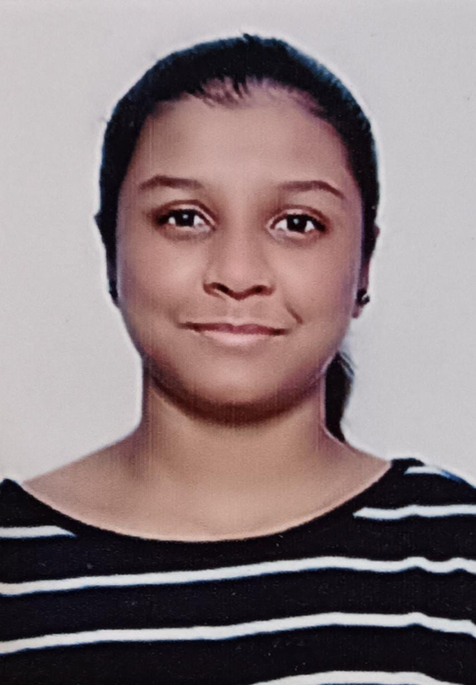

Vadrevu Hari Priya

Summary
A Second year Under Graduate in Mechanical Engineering who is passionate on learning and seeking new experiences to imply the skills learnt through educational knowledge.
Education
- Bachelor's of Technology in Mechanical Engineering - Indian Institute of Technology Varanasi. [Present]
- High School - Sri Chaitanya College. [2020-2022]
- SSC - Sri Chaitanya School. [2020]
Skills
- Full Stack Web Development | Python, HTML, CSS ,Java Script, Node JS.
- Strong problem-solving and analytical skills.
- Excellent communication and teamwork abilities.
Coursework
- Mechanical Design
- Linear Algebra
- Diffrential Equations
Honors and Acheivements
- Kotak Scholarship | For top 300 girl students in India - 2023
- Cracked India's Toughest and Prestigious Examination IIT-JEE and secured AIR 18000
Others